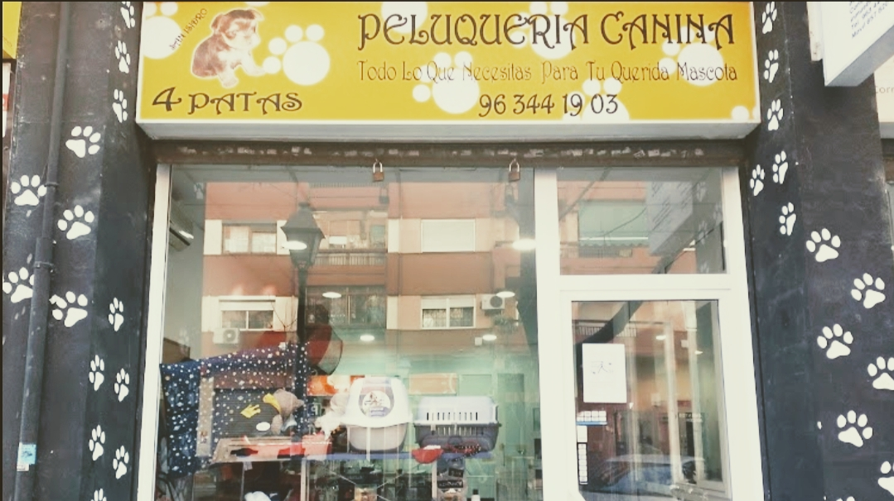
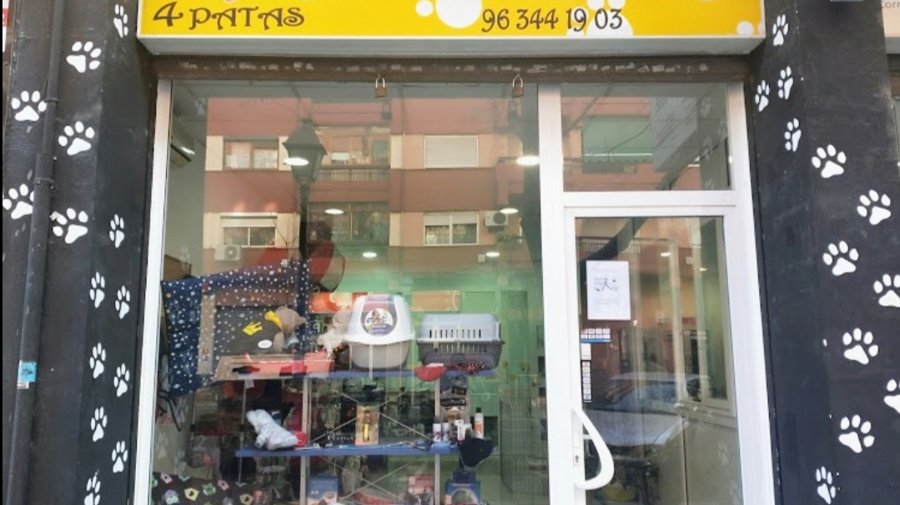
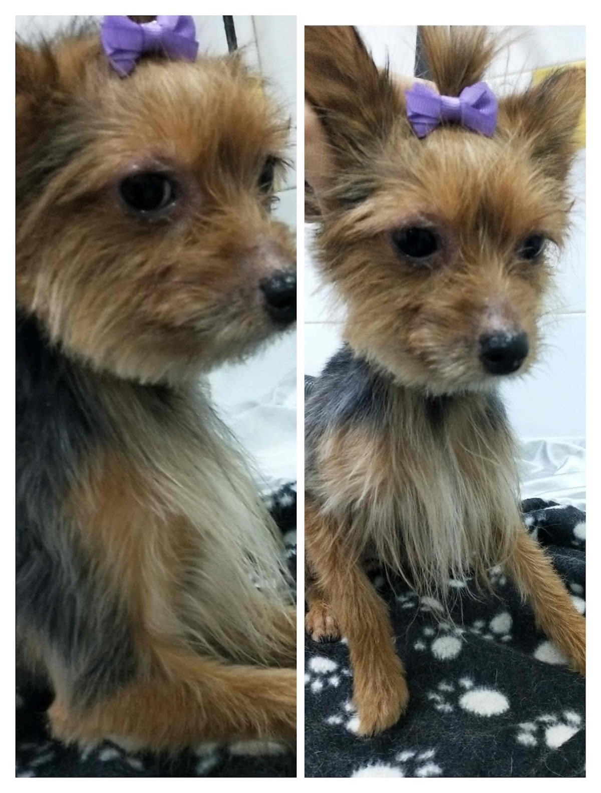
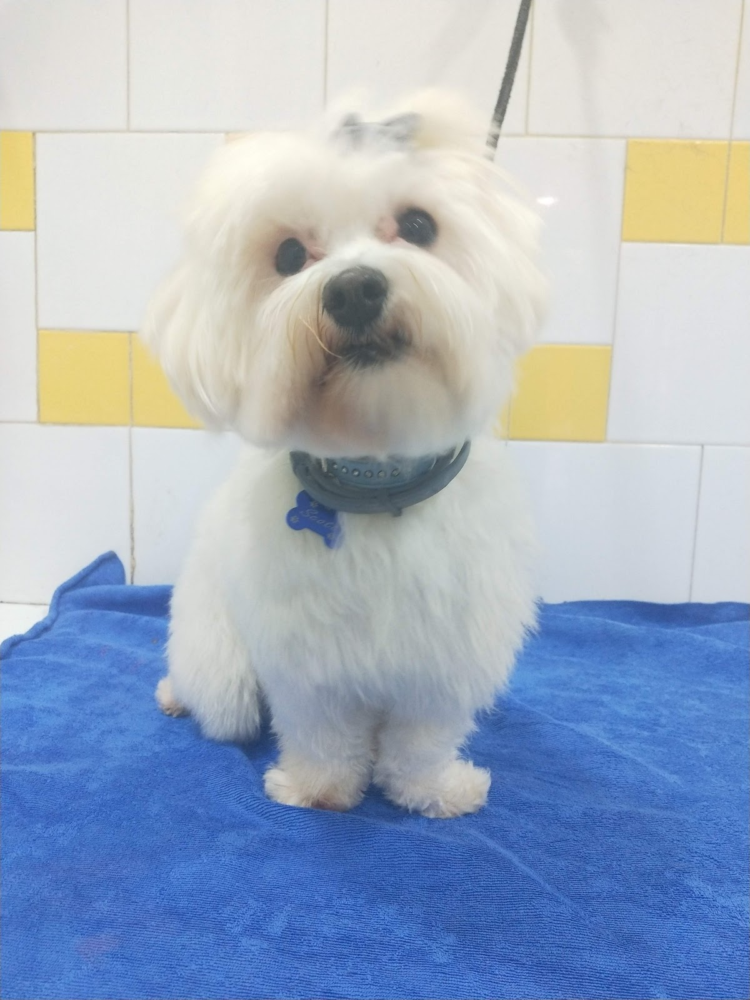
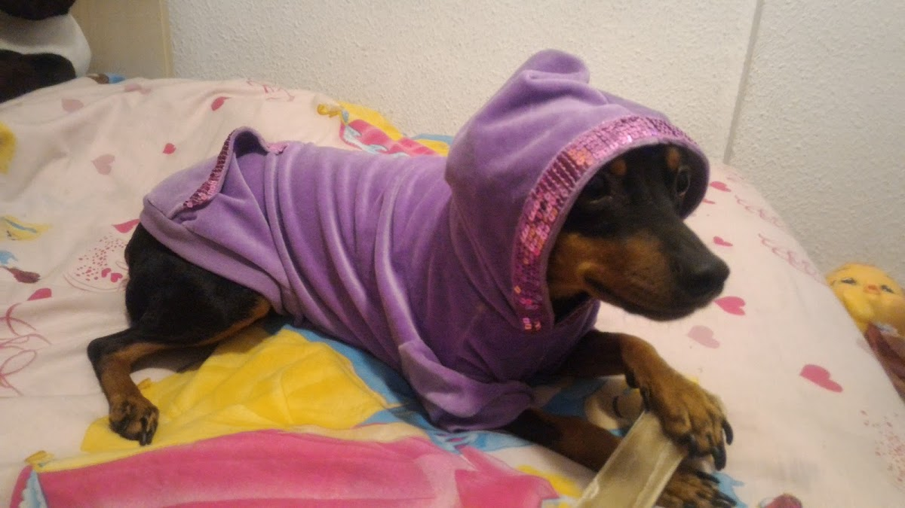
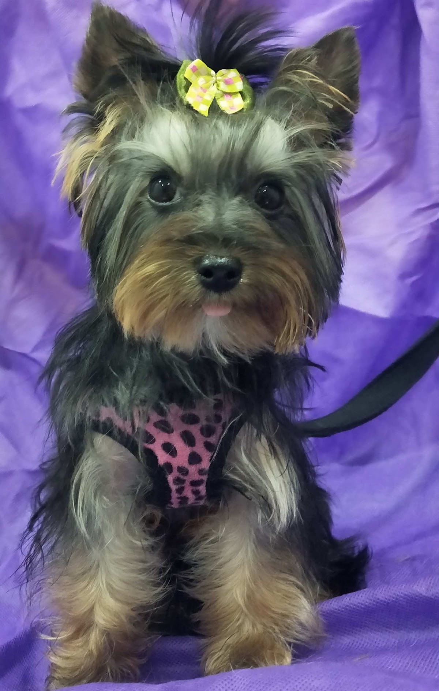
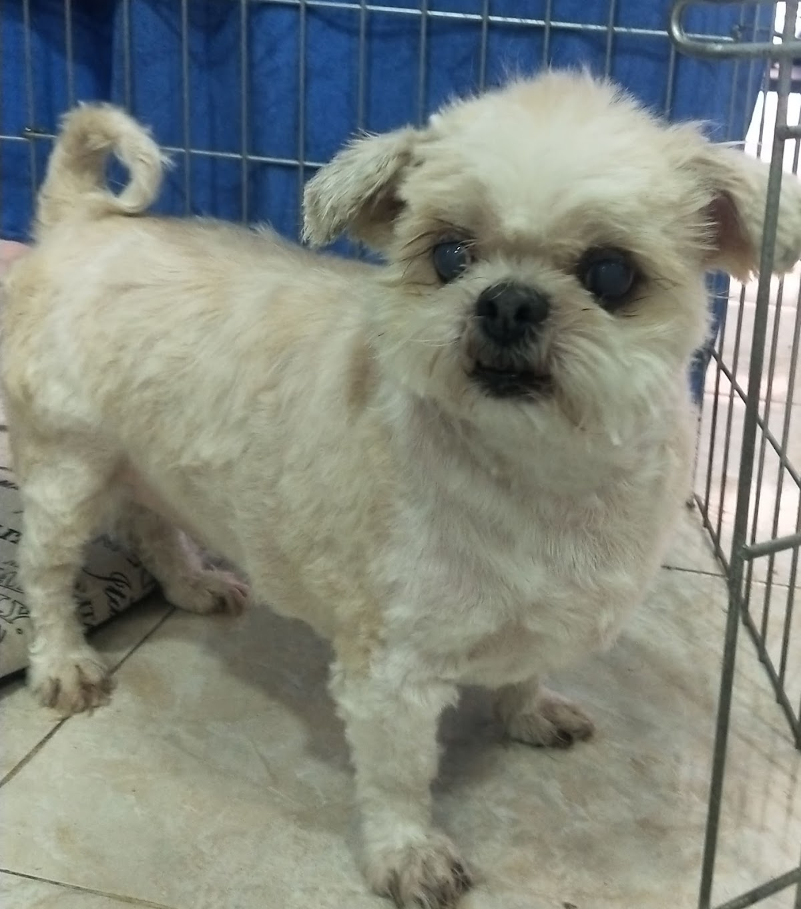
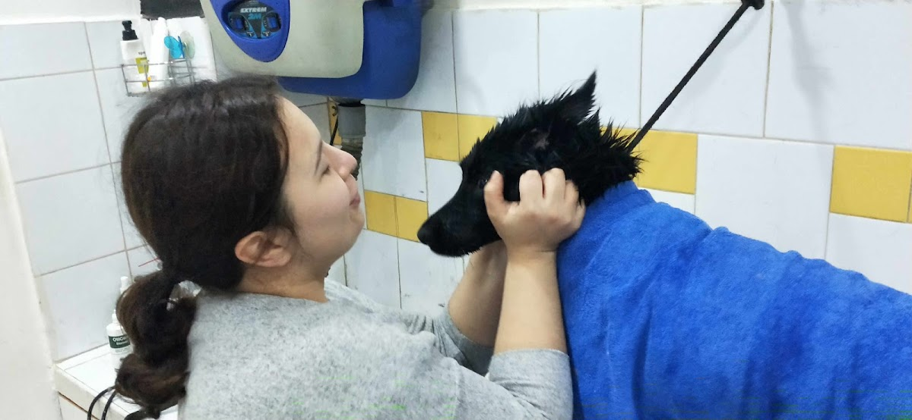

Baño, corte y mucho mimo en el barrio de Patraix. Con Isabel, que trata a cada perro con el cariño que tú le darías —y te lo entrega sequito, con las uñas cortadas y las orejas limpias.

No es solo un baño: es entregarte a tu perro limpio de verdad, cómodo y guapo. Tú lo dejas tranquilo y lo recoges como nuevo.
Champú adecuado a su pelo, secado a fondo y cepillado. Tu perro vuelve a casa limpio limpio —y oliendo de maravilla.
Corte a tijera o máquina según su raza y lo que tú quieras. Lo dejamos guapísimo, con su carita despejada y comodísimo.
Uñas cortadas y orejas limpias en cada visita. Esos detalles que se notan y que cuidan su salud —sin que tú tengas que pelearte en casa.
El trato que marca la diferencia. Aquí tu perro está en buenas manos: con calma, cariño y sin prisas. Por eso vuelve contento.

En 4 Patas te atiende Isabel: profesional, simpática y, sobre todo, con un amor real por los animales. No es un eslogan —es lo primero que dicen sus clientas cuando hablan de ella.
Por eso tantos perros del barrio la adoran y vuelven moviendo el rabo. Tú dejas a tu perro sabiendo que está en muy buenas manos, y lo recoges guapísimo y tranquilo.
Nada de recogerlo a medio secar. Sale sequito y cómodo, listo para volver a casa sin pasar frío.
Isabel se nota el cariño que tiene a los animales. Tu perro deja de temer la peluquería.
En San Isidro, Patraix. Lo dejas de camino y lo recoges guapo, sin cruzar media Valencia.
Sin centralitas ni esperas. Escribes, cuentas qué necesita tu perro y buscamos hueco.
Algunos de los peludos que pasan por aquí —y se van moviendo el rabo.






"Por fin encontré una peluquería en el barrio donde me entregan a mi hija seca... Esta vez estoy súper satisfecha: mi Fiona limpia limpia, sus uñas cortadas, sus orejas limpias y se nota que la ducharon."
"Isabel es muy buena profesional, simpática, agradable, se nota el cariño que tiene por los animales. Estoy muy contento de llevar a mi perra Luna, sé que está en muy buenas manos."
"Maravilloso todo. La atención, el trato a mi perrito, el servicio de baño y corte estupendo. Ya no me cambio de allí."
"Isabel es un encanto. Mi perra la adora. Es la mejor peluquera canina de Valencia. Deja a mi chica guapísima."
"Isabel es una gran profesional, se nota que le gustan los animales. Cuando llevo a mi perrita Gaba la trata con mucho cariño y estoy muy contenta porque sé que está en buenas manos. Lo recomiendo al 100%."
Escríbele a Isabel por WhatsApp, cuéntale cómo es tu perro y qué necesita, y buscáis hueco. Fácil, rápido y sin esperas.
Pedir cita ahoraEn el barrio de toda la vida. Trae a tu perro cuando quieras —o escríbenos antes por WhatsApp y reservamos tu hueco.